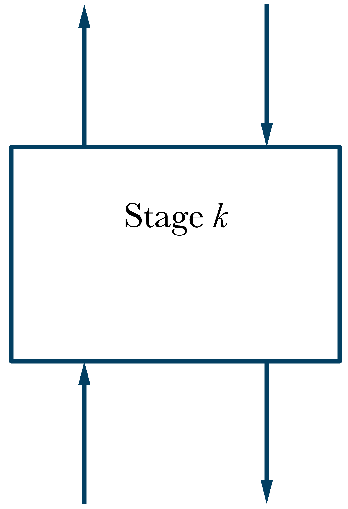
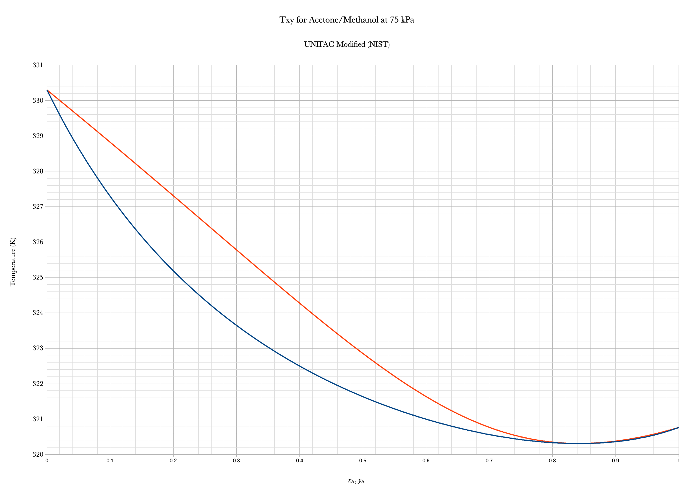
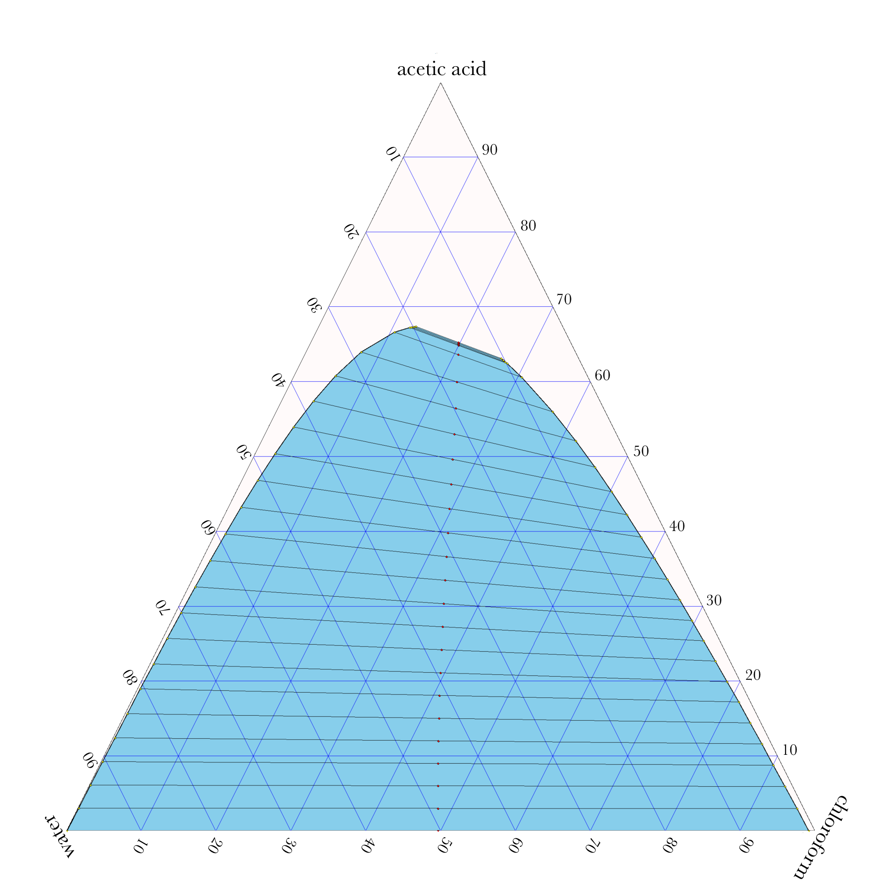
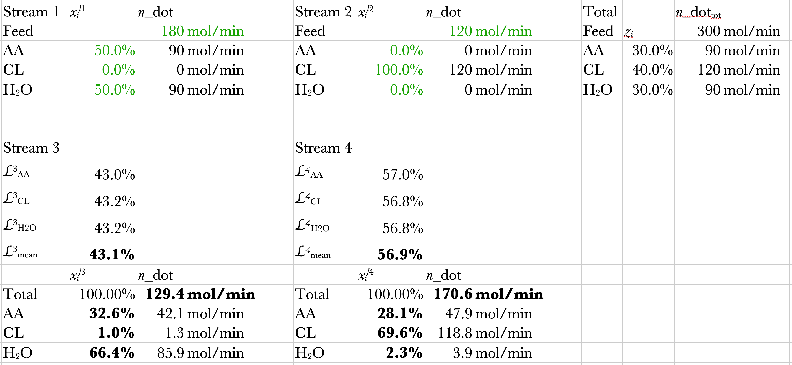
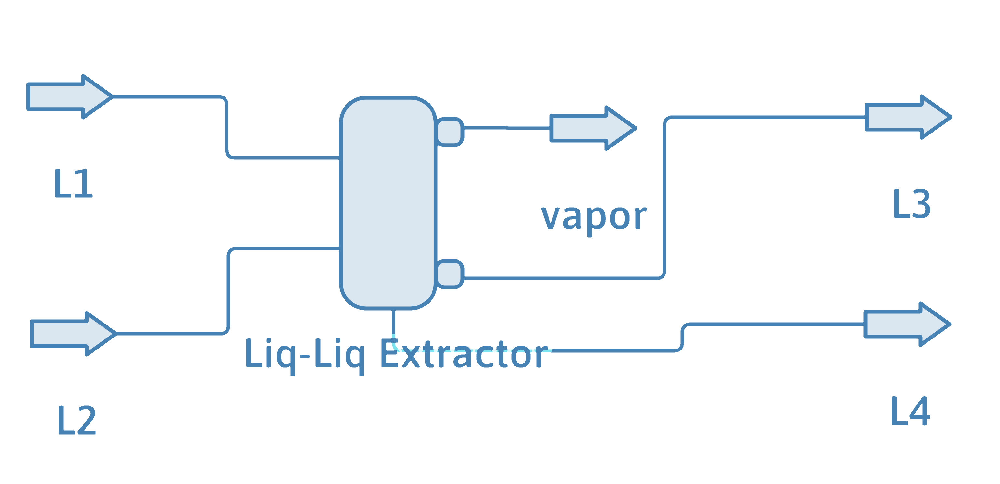

The Shocking Truth About Equilibrium Stages—Are You Doing It Wrong? Part 1
DOFPro Team


\(\dot{n}_{k-1}^2\)
\(\dot{n}_{k+1}^1\)
\(\dot{n}_{k}^2\)
\(\dot{n}_{k}^1\)
\(T_k,\ P_k\)
Mole Balance in General
\(\dot{n}_{k+1}^1 + \dot{n}_{k-1}^2 = \dot{n}_{k}^1 + \dot{n}_{k}^2 = \dot{n}_\mathrm{tot}\)
\(x_{i,k+1}\dot{n}_{k+1}^1 + y_{i,k-1}\dot{n}_{k-1}^2 = x_{i,k}\dot{n}_{k}^1 + y_{i,k}\dot{n}_{k}^2\)
\(z_{i,k} = \dfrac{{x_{i,k+1}}\dot{n}_{k+1}^1 + {y_{i,k-1}}\dot{n}_{k-1}^2}{(\dot{n}_{k+1}^1 + \dot{n}_{k-1}^2)\text{ or }\dot{n}_\mathrm{tot}} = \dfrac{{x_{i,k}}\dot{n}_{k}^1 + {y_{i,k}}\dot{n}_{k}^2}{(\dot{n}_{k}^1 + \dot{n}_{k}^2)\text{ or }\dot{n}_\mathrm{tot}}\)
\(\dfrac{\dot{n}_{k}^1}{{\dot{n}_\mathrm{tot}}} = \dfrac{\dot{n}_{k}^1}{\dot{n}_{k}^1 + \dot{n}_{k}^2}, \hspace{30mm}\dfrac{\dot{n}_{k}^2}{{\dot{n}_\mathrm{tot}}} = \dfrac{\dot{n}_{k}^2}{\dot{n}_{k}^1 + \dot{n}_{k}^2}\)
Phase Equilibria
Phase Diagrams \(\hspace{30mm}\) All at \(T_k\), \(P_k\)
Raoult’s law \(y_{i,k}P_k = x_{i,k}p_{i,k}^*\)
\(\dot{n}_{k-1}^v\)
\(\dot{n}_{k+1}^l\)
\(\dot{n}_{k}^v\)
\(\dot{n}_{k}^l\)
\(T_k,\ P_k\)
Mole Balance for Distillation
\(\dot{n}_{k+1}^l + \dot{n}_{k-1}^v = \dot{n}_{k}^l + \dot{n}_{k}^v = \dot{n}_\mathrm{tot}\)
\(x_{i,k+1}\dot{n}_{k+1}^l + y_{i,k-1}\dot{n}_{k-1}^v = x_{i,k}\dot{n}_{k}^l + y_{i,k}\dot{n}_{k}^v\)
\(z_{i,k} = \dfrac{{x_{i,k+1}}\dot{n}_{k+1}^l + {y_{i,k-1}}\dot{n}_{k-1}^v}{(\dot{n}_{k+1}^l + \dot{n}_{k-1}^v)\text{ or }\dot{n}_\mathrm{tot}} = \dfrac{{x_{i,k}}\dot{n}_{k}^l + {y_{i,k}}\dot{n}_{k}^v}{(\dot{n}_{k}^l + \dot{n}_{k}^v)\text{ or }\dot{n}_\mathrm{tot}}\)
\(\mathcal{L}_k = \dfrac{\dot{n}_{k}^l}{{\dot{n}_\mathrm{tot}}}, \hspace{30mm} \mathcal{V} = \dfrac{\dot{n}_{k}^v}{{\dot{n}_\mathrm{tot}}}\)
Phase Equilibria
Phase Diagrams \(\hspace{30mm}\) All at \(T_k\), \(P_k\)
Raoult’s law \(y_{i,k}P_k = x_{i,k}p_{i,k}^*\)
\(\dot{n}_{k-1}^v\)
\(\dot{n}_{k+1}^l\)
\(\dot{n}_{k}^v\)
\(\dot{n}_{k}^l\)
\(T_k,\ P_k\)
Types of Calculations
Given \(T_k\) and \(x_{i,k}\), find \(P_k\) and \(y_{i,k}\). BUBL P
Given \(P_k\) and \(x_{i,k}\), find \(T_k\) and \(y_{i.k}\). BUBL T
Given \(T_k\) and \(y_{i,k}\), find \(P_k\) and \(x_{i,k}\). DEW P
Given \(P_k\) and \(y_{i,k}\), find \(T_k\) and \(x_{i,k}\). DEW T
Given \(T_k\), \(P_k\), and \(z_{i,k}\), find \(\mathcal{L}_k\), \(\mathcal{V}_k\),
\(x_{i,k}\), and \(y_{i,k}\).
FLASH
Examples
- Distillation Column – Binary Phase Diagram
- Distillation Column – Raoult’s Law
- Liquid-Liquid Extraction – Ternary Phase Diagram
The Takeaways
- Equilibrium Separation Stages find common use in the chemical process industry.
- The mass balances are quite similar among the different types, and use the principles that have need explained in earlier videos.
- The principal differences are the means used to calculate the equilibrium compositions of the exiting streams.
Thanks for watching!
The previous video is in the link in the upper left. The next video in the series, is in the upper right. To learn more about Chemical and Thermal Processes, visit the website linked in the description.
The Shocking Truth About Equilibrium Stages—Are You Doing It Wrong? Part 2
DOFPro Team
Examples
- Distillation Column – Binary Phase Diagram – in Part 2
- Distillation Column – Raoult’s Law – in Part 2
- Liquid-Liquid Extraction – Ternary Phase Diagram – in Part 3
\(\dot{n}_{k-1}^v\)
\(\dot{n}_{k+1}^l\)
\(\dot{n}_{k}^v\)
\(\dot{n}_{k}^l\)
\(T_k,\ P_k\)
Example: Distillation Phase Diagram
An equilibrium stage in a distillation column for separating methanol from acetone has a liquid feed of 10.0% acetone at 180 mol/min and a vapor feed of 40.0% acetone at 180 mol/min. Measurements indicate that the stage is operating at a temperature of 326 K and a pressure of 75 kPa. Calculate the compositions and flow rates of the exiting vapor and liquid streams. The phase diagram is given below.

\(\dot{n}_\mathrm{tot} = \dot{n}_{k+1}^l + \dot{n}_{k-1}^v = 180 + 180 = 360\ \mathrm{mol/min}\)
\(z_{i,k} = \dfrac{{x_{i,k+1}}\dot{n}_{k+1}^l + {y_{i,k-1}}\dot{n}_{k-1}^v}{\dot{n}_\mathrm{tot}} = \dfrac{{x_{i,k+1}} \mathbf{\cdot} 180 + {y_{i,k-1}}\mathbf{\cdot} 180}{360}\) \((i=\mathrm{A-acetone,\ M-methanol})\)
Lever Rule
\(\mathcal{L}_k = \dfrac{y_{\mathrm{A},k}-z_{\mathrm{A},k}}{y_{\mathrm{A},k}-x_{\mathrm{A},k}}\) \(\text{Need }y_{\mathrm{A},k},\ x_{\mathrm{A},k}\)
\(y_{\mathrm{A},k}^v=0.285\)
\(x_{\mathrm{A},k}^l=0.158\)
\(z_{\mathrm{A},k}=0.250\)
\(\mathcal{L}_k = \dfrac{y_{\mathrm{A},k}-z_{\mathrm{A},k}}{y_{\mathrm{A},k}-x_{\mathrm{A},k}} = \dfrac{0.285-0.25}{0.285-0.158} = 0.276\)
\(\mathcal{V}_k = 1 - \mathcal{L}_k = 1 - 0.276 = 0.724\)
\(\dot{n}_{k}^l = \mathcal{L}_k \mathbf{\cdot} \dot{n}_\mathrm{tot} = 0.276 \mathbf{\cdot} 360 = 99.2\ \mathrm{mol/min}\)
\(\dot{n}_{k}^v = \mathcal{V}_k \mathbf{\cdot} \dot{n}_\mathrm{tot} = 0.000 \mathbf{\cdot} 360 = 260.8\ \mathrm{mol/min}\)
\(\dot{n}_{k-1}^v\)
\(\dot{n}_{k+1}^l\)
\(\dot{n}_{k}^v\)
\(\dot{n}_{k}^l\)
\(T_k,\ P_k\)
Example: Distillation Raoult’s Law
An equilibrium stage in a distillation column for separating hexane from heptane and octane has a liquid feed of 45.0% hexane, 45.0% heptane, and the balance octane at 240 mol/min and a vapor product of 45.0% hexane, 45.0% heptane and the balance octane at 180 mol/min and a pressure of 1.00 bar. Determine the operating temperature of the stage and the composition of the liquid product. What additional information would you need to determine the composition of the vapor feed and the flow rates of the liquid product and the vapor feed?
Solution
The exiting streams, (the \(k\)’s) are in equilibrium. We’re given the exiting vapor composition and the pressure, so the phase calculation is a DEW T.
- Guess a \(T_\mathrm{guess}\).
- Calculate the \(p^*\)’s from the \(T\).
- Calculate the \(P_\mathrm{calc}\) as the reciprocal of the sum of the vapor mole fractions over the vapor pressures.
- Use Goal Seek to vary \(T_\mathrm{guess}\) until \(P = P_\mathrm{calc}\).
- Use Raoult’s law to calculate the exiting liquid composition.
Solution
\(p_6^* = 10^{4.00266 - \frac{1171.530}{T - 48.784}},\ \ \ \ p_7^* = 10^{4.02832 - \frac{1268.636}{T - 56.199}},p_8^* = 10^{4.04867 - \frac{1355.126}{T - 63.633}}\)
\(P_\mathrm{calc} = \frac{1}{\sum\limits_{i=1}^N \dfrac{y_i}{p_i^*}} = \frac{1}{\dfrac{y_{6,k}}{p_6^*}+\dfrac{y_{7,k}}{p_7^*}+\dfrac{y_{8,k}}{p_8^*}} = \dfrac{1}{\dfrac{0.450}{p_6^*}+\dfrac{0.450}{p_7^*}+\dfrac{0.100}{p_8^*}}\)
\(x_{6,k} = \dfrac{y_{6,k}P}{p_6^*}\)
\(x_{7,k} = \dfrac{y_{7,k}P}{p_7^*}\)
\(x_{8,k} = 1 - (x_{6,k} +x_{7,k} )\)

To determine the remaining variables we need a minimum of either the total entering vapor flow or the total exiting liquid flow, \(\mathcal{L}\) or \(\mathcal{V}\), or two of \(z_{6,k},\ z_{7,k},\) or \(z_{8,k}\). The remaining mass balances will permit us to calculate everything else. The spreadsheet was tested with the total exiting liquid flow.
The Takeaways
- For binary separations a binary phase diagram makes the phase-equilibrium calculation easy and quick, but not necessarily accurate.
- For ideal solutions Raoult’s law and the Antoine equation can be used for the phase-equilibrium calculations.
- Using chemical-process-flowsheet software such as DWSIM removes most of the tedium from the process, if you know what you are doing.
Thanks for watching!
The previous video is in the link in the upper left. The next video in the series, is in the upper right. To learn more about Chemical and Thermal Processes, visit the website linked in the description.
The Shocking Truth About Equilibrium Stages—Are You Doing It Wrong? Part 3
DOFPro Team
\(\dot{n}_{2}^{l_2}\)
\(\dot{n}_{1}^{l_1}\)
\(\dot{n}_{4}^{l_4}\)
\(\dot{n}_{3}^{l_3}\)
\(T_k,\ P_k\)
Example: Liquid-Liquid Extraction Phase Diagram
An equilibrium stage in a liquid-liquid extraction process has an equimolar feed of 50.0% water and 50.0% acetic acid and a flow rate of 180 mol/min. This feed needs to have most of the water removed. To this end, the other feed is 100% chloroform at 120 mol/min. The stage is operating at 298 K and 1 atm. Determine the flow rates and compositions of the product streams. How well does this first stage remove the water? The water-acetic acid-chloroform ternary phase diagram is given below.
\(\dot{n}_\mathrm{tot} = \dot{n}_1^{l_1} + \dot{n}_2^{l_2} = 180 + 120 = 300\ \mathrm{mol/min}\)
\(\dot{n}_{i,1}^{l_1} = x_i^{l_1} \dot{n}_1^{l_1} = 180 x_i^{l_1}\ \ \ \ (i=\mathrm{AA,\ CL,\ H_2O})\)
\(\dot{n}_{i,2}^{l_2} = x_i^{l_2} \dot{n}_2^{l_2} = 120 x_i^{l_2}\ \ \ \ (i=\mathrm{AA,\ CL,\ H_2O})\)
\(z_i = \dfrac{\dot{n}_{i,1}^{l_1} + \dot{n}_{i,2}^{l_2}}{\dot{n}_\mathrm{tot}}=\dfrac{180 x_i^{l_1} + 120 x_i^{l_2}}{300}\ \ \ \ (i=\mathrm{AA,\ CL,\ H_2O})\)
\(z_\mathrm{AA} = 0.300,\ \ \ \ z_\mathrm{CL} = 0.400,\ \ \ \ z_\mathrm{H2O} = 0.300\)
\(\mathcal{L}^3 = \dfrac{z_i - x_i^{l_4}}{x_i^{l_3} - x_i^{l_4}}\ \ \ \ \mathcal{L}^4 = 1 - \mathcal{L}^3\)
\(\text{Need }x_\mathrm{AA}^{l_3},\ x_\mathrm{CL}^{l_3},\ x_\mathrm{H_2O}^{l_3},\ x_\mathrm{AA}^{l_4},\ x_\mathrm{CL}^{l_4},\ x_\mathrm{H_2O}^{l_4}\)
Ternary Phase Diagram
Ternary Phase Diagram
\((30.0\%,\ 40.0\%,\ 30.0\%)\)
\((32.6\%,\ 1.0\%,\ 66.4\%)\)
\((28.1\%,\ 69.6\%,\ 2.3\%)\)
\(z_\mathrm{AA} = 30.0\%,\ \ \ \ z_\mathrm{CL} = 40.0\%,\ \ \ \ z_\mathrm{H2O} = 30.0\%\)
\(x_\mathrm{AA}^{l_3} = 32.6\%,\ \ \ \ x_\mathrm{CL}^{l_3} = 1.0\%,\ \ \ \ x_\mathrm{H_2O}^{l_3} = 66.4\%\)
\(x_\mathrm{AA}^{l_4} = 28.1\%,\ \ \ \ x_\mathrm{CL}^{l_4} = 69.6\%,\ \ \ \ x_\mathrm{H_2O}^{l_4} = 2.3\%\)
The liquid-fraction values for each species were calculated with \(\mathcal{L}^3 = \dfrac{z_i - x_i^{l_4}}{x_i^{l_3} - x_i^{l_4}}\) and then averaged.
\(\mathcal{L}_\mathrm{mean}^3 = 43.1\%,\ \ \ \ \mathcal{L}_\mathrm{mean}^4 = 56.9\%\)
\(\dot{n}_3^{l_3} = \mathcal{L}_\mathrm{mean}^3 \dot{n}_\mathrm{tot} = 0.431 \mathbf{\cdot} 300 = 129\ \mathrm{mol/min}\)
\(\dot{n}_4^{l_4} = \mathcal{L}_\mathrm{mean}^4 \dot{n}_\mathrm{tot} = 0.569 \mathbf{\cdot} 300 = 171\ \mathrm{mol/min}\)
Solution Spreadsheet
DWSIM Solution
Here is the PFD and results of using DWSIM to solve this example problem.

Stream 3
\(\dot{n} = 128.8\ \mathrm{mol/min}\)
\(x_\mathrm{AA} = 32.4\%\)
\(x_\mathrm{CL} = 0.92\%\)
\(x_\mathrm{H_2O} = 66.7\%\)
Stream 4
\(\dot{n} = 171.2\ \mathrm{mol/min}\)
\(x_\mathrm{AA} = 28.2\%\)
\(x_\mathrm{CL} = 69.4\%\)
\(x_\mathrm{H_2O} = 2.41\%\)
Calculation results for Material Stream L1
Compounds: { Acetic acid, Chloroform, Water, }
Specification: Temperature and Pressure
Temperature: 298.15 K
Pressure: 101325 Pa
Property Package: Modified UNIFAC (NIST)
Vapor Phase Molar Fraction 0
Liquid Phase 1 Molar Fraction 1
Liquid Phase 2 Molar Fraction 0
[Liquid Phase] Mass Flow 0.117101 kg/s
[Liquid Phase] Molar Flow 3 mol/s
[Liquid Phase] Volumetric Flow 0.00011491 m3/s
[Liquid Phase] Acetic acid Mole Frac 0.5
[Liquid Phase] Chloroform Mole Frac 0
[Liquid Phase] Water Mole Frac 0.5
[Liquid Phase] Acetic acid Mole Flow 1.5 mol/s [Liquid Phase] Chloroform Mole Flow 0 mol/s [Liquid Phase] Water Mole Flow 1.5 mol/s
Calculation results for Material Stream L2
Compounds: { Acetic acid, Chloroform, Water, }
Specification: Temperature and Pressure
Temperature: 298.15 K
Pressure: 101325 Pa
Property Package: Modified UNIFAC (NIST)
Vapor Phase Molar Fraction 0
Liquid Phase 1 Molar Fraction 1
Liquid Phase 2 Molar Fraction 0
[Liquid Phase] Mass Flow 0.238755 kg/s
[Liquid Phase] Molar Flow 2 mol/s
[Liquid Phase] Volumetric Flow 0.00016021 m3/s
[Liquid Phase] Acetic acid Mole Frac 0
[Liquid Phase] Chloroform Mole Frac 1
[Liquid Phase] Water Mole Frac 0
[Liquid Phase] Acetic acid Mole Flow 0 mol/s
[Liquid Phase] Chloroform Mole Flow 2 mol/s
[Liquid Phase] Water Mole Flow 0 mol/s
Calculation results for Material Stream L3
Compounds: { Acetic acid, Chloroform, Water, }
Specification: Pressure and Enthalpy
Pressure: 101325 Pa
Enthalpy: -1431.7079925153 kJ/kg
Property Package: Modified UNIFAC (NIST)
Stream Temperature 296.397 K
Stream Pressure 101325 Pa
Vapor Phase Molar Fraction 0
Liquid Phase 1 Molar Fraction 1
Liquid Phase 2 Molar Fraction 0
[Liquid Phase] Mass Flow 0.069894 kg/s
[Liquid Phase] Molar Flow 2.14627 mol/s
[Liquid Phase] Volumetric Flow 6.8864E-05 m3/s
[Liquid Phase] Acetic acid Mole Frac 0.323883
[Liquid Phase] Chloroform Mole Frac 0.00922527
[Liquid Phase] Water Mole Frac 0.666891
[Liq. Ph.] Acetic acid Mole Flow 0.695141 mol/s
[Liq. Ph.] Chloroform Mole Flow 0.01980 mol/s
[Liq. Ph.] Water Mole Flow 1.43133 mol/s
Calculation results for Material Stream L4
Compounds: { Acetic acid, Chloroform, Water, }
Specification: Pressure and Enthalpy
Pressure: 101325 Pa
Enthalpy: -361.464104380024 kJ/kg
Property Package: Modified UNIFAC (NIST)
Stream Temperature 296.397 K
Stream Pressure 101325 Pa
Vapor Phase Molar Fraction 0
Liquid Phase 1 Molar Fraction 1
Liquid Phase 2 Molar Fraction 0
[Liquid Phase] Mass Flow 0.285962 kg/s
[Liquid Phase] Molar Flow 2.85373 mol/s
[Liquid Phase] Volumetric Flow 0.00021699 m3/s
[Liquid Phase] Acetic acid Mole Frac 0.282037
[Liquid Phase] Chloroform Mole Frac 0.693899
[Liquid Phase] Water Mole Frac 0.0240638
[Liq. Ph.] Acetic acid Mole Flow 0.804859 mol/s
[Liq. Ph.] Chloroform Mole Flow 1.9802 mol/s
[Liq. Ph.] Water Mole Flow 0.0686717 mol/s
The Takeaways
- Liquid-Liquid extraction works very similarly to distillation stages and other equilibrium separation stages.
- The biggest challenge is getting and using the phase-equilibrium data.
- Using chemical-process-flowsheet software such as DWSIM removes most of the tedium from the process, if you know what you are doing.
Thanks for watching!
The previous video is in the link in the upper left. The next video in the series, is in the upper right. To learn more about Chemical and Thermal Processes, visit the website linked in the description.